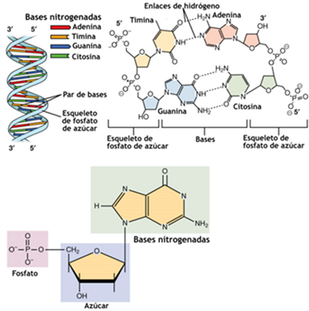

Estructura del ADN y del ARN
Introducción
El ácido desoxirribonucleico (ADN) y el ácido ribonucleico (ARN) son ácidos nucleicos formados por la polimerización de nucleótidos. Aunque comparten principios químicos (azúcar pentosa, base nitrogenada y fosfato), difieren en su química fina y en las estructuras que adoptan, lo que determina su estabilidad y funciones celulares.
Nucleótidos y enlaces
- Componentes: una pentosa (desoxirribosa en el ADN; ribosa en el ARN), un grupo fosfato y una base (A, G, C, T/U).
- Enlace fosfodiéster: une el 3’ de un nucleótido con el 5’ del siguiente, estableciendo polaridad 5’→3’ en la cadena.
- Diferencia clave: el ARN posee un grupo 2’-OH en la ribosa (ausente en desoxirribosa). Ese 2’-OH incrementa la reactividad química y favorece geometrías de hélice A en dúplex de ARN; además facilita el plegamiento intramolecular y contactos con proteínas.
- Bases: el ADN usa timina (T); el ARN usa uracilo (U). Las parejas de bases canónicas son A·T(U) y G·C.
 Nucleótidos. Estructura ADN
Estructura del ADN
Doble hélice B (forma canónica)
- Arquitectura: dos hebras antiparalelas con las bases apiladas hacia el interior y el esqueleto azúcar‑fosfato hacia el exterior.
- Geometría característica (valores aproximados):
- ~10.4–10.5 pares de bases por vuelta.
- Paso helicoidal (pitch) de ~3.4 nm por vuelta y 0.34 nm de separación entre pares de bases.
- Diámetro de ~2.0 nm.
- Presencia de surco mayor (ancho) y surco menor (estrecho), relevantes para el reconocimiento de secuencia por proteínas.
- Enlaces no covalentes: el apilamiento de bases (interacciones π‑π) y los puentes de hidrógeno A·T(2) y G·C(3) estabilizan la hélice.
- Reglas de Chargaff: la complementariedad conduce a una proporción ~1:1 de purinas con pirimidinas.
Otras conformaciones (A y Z)
- A‑ADN: hélice más corta y ancha, con ~11 pb/vuelta; aparece en condiciones de baja hidratación.
- Z‑ADN: hélice zurda con ~12 pb/vuelta, favorecida por secuencias alternantes purina‑pirimidina y ciertas condiciones iónicas.
Organización superior del ADN (visión general)
- El ADN eucariota se superenrolla y se empaqueta en cromatina.
- La unidad básica es el nucleosoma: un octámero de histonas alrededor del cual se enrollan ~145–147 pb de ADN. Conjuntos de nucleosomas y regiones linker forman fibras y bucles que compactan el genoma.
Estructura del ARN
Rasgos generales
- Normalmente es monocatenario, pero puede formar segmentos dúplex por apareamiento intramolecular.
- En dúplex, el ARN adopta preferentemente geometría A (surco mayor profundo y estrecho; surco menor ancho y somero).
- La presencia de 2’-OH favorece puentes de hidrógeno intramoleculares, redes de solvatación y catálisis en ribozimas.
Estructura secundaria (motivos frecuentes)
- Tallos/brazos (stems): regiones dúplex Watson‑Crick (A·U y G·C) con apareamientos no canónicos frecuentes (p. ej., G·U “wobble”).
- Bucles de horquilla (hairpins) o stem‑loops.
- Bucles internos y abultamientos (bulges).
- Junciones multirrama.
Estos elementos modulan estabilidad y accesibilidad, y condicionan la función (traducción, splicing, regulación, etc.).
Estructura terciaria
- Apilamientos coaxiales, tripletes, pseudonudos y contactos ARN‑proteína/ion organizan dominios 3D.
- Ejemplos clásicos incluyen la forma en L del tRNA y los pliegues extensos del rRNA.
Comparativa rápida ADN vs ARN
| Característica | ADN | ARN |
|---|---|---|
| Azúcar | Desoxirribosa (sin 2’-OH) | Ribosa (con 2’-OH) |
| Base exclusiva | Timina (T) | Uracilo (U) |
| Catenariedad típica | Bicatenario | Monocatenario (con dúplex locales) |
| Geometría del dúplex | B‑hélice (10.4–10.5 pb/vuelta; 2.0 nm diámetro) | A‑hélice en dúplex de ARN |
| Estabilidad química | Mayor (menos reactivo) | Menor (2’-OH favorece hidrólisis y plegamiento) |
| Apareamiento no canónico | Raro | Frecuente (G·U, otros) |
| Empaquetamiento | Nucleosomas y cromatina | Complejos RNP (p. ej., ribosomas, spliceosoma) |
Detalles numéricos útiles (recordatorio)
- Separación entre pares de bases en B‑ADN: ~0.34 nm.
- Paso por vuelta en B‑ADN: ~3.4 nm.
- Parejas de bases: A·T (2 puentes H), G·C (3 puentes H).
- Nucleosoma: ~145–147 pb de ADN alrededor de un octámero de histonas.